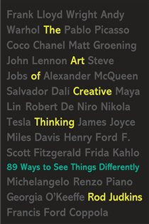

Library › Creativity
The Art of Creative Thinking — Summary & Key Lessons

89 lessons from art-school thinking: how the world's most creative people actually work — and how to steal their methods.
📖 OPEN THE FULL INTERACTIVE BREAKDOWN →🌐 Read it in Hindi, Hinglish, Gujarati, Tamil & 22 more languages — free, with audio.
💡 The Big Idea
Rod Judkins, artist and lecturer at Central Saint Martins (the art school that produced everyone from Lucian Freud to Stella McCartney), distills a lifetime of observing creative people into short, punchy lessons. His core message: creative people aren't more talented — they operate differently. They start before they feel ready, treat failure as material, doubt everything productively, cross-pollinate between fields, and commit totally to their own vision even when the world calls it wrong. Every technique is learnable.
🧠 The 7 Key Lessons
Lesson 1: Start Before You're Ready — Just Begin
Lessons: 'Don't wait until you're ready' / 'Get a hobbyhorse'
The biggest creativity killer is waiting: for readiness, inspiration, permission, or the perfect idea. Creative people begin — badly if necessary — because working generates ideas far better than thinking about working. The blank page is beaten by ANY mark on it. Amateurs wait for the muse; professionals show up, start moving, and let momentum do what motivation couldn't. Action produces information no amount of planning can.
📖 Example: Picasso produced roughly 50,000 works — an average of two per day for his entire adult life. He didn't wait to feel inspired; he treated painting like breathing. The masterpieces exist because the mediocre pieces were allowed to exist first. 'Inspiration… Read the full example →
⚡ Do this: Take the project you've been 'preparing' for. Set a timer for 20 minutes today and produce the worst first version imaginable. You now have material — improvement can begin.
Lesson 2: Fail Better: Failure Is Research
Lessons: 'If you're afraid of failure, you're afraid of success'
Creative fields have no path around failure — only through it. The trick is reframing: every failure is data about what doesn't work, which is exactly one step closer to what does. People who avoid failure avoid attempting anything meaningful, succeeding only at triviality. Art schools deliberately push students to the point of collapse because breakthrough lives one inch past breakdown. Fail forward, fail publicly if needed, and mine every wreck for parts.
📖 Example: James Dyson built 5,126 failed prototypes of his bagless vacuum over 15 years — near bankruptcy throughout — before number 5,127 worked. He calls the failures his education: each one eliminated a wrong answer. The final design existed INSIDE those failures,… Read the full example →
⚡ Do this: Reframe your last flop in writing: list exactly what it taught you that success couldn't have. Then apply one of those lessons to a new attempt within the week.
Lesson 3: Doubt Everything — Especially the Experts
Lessons: 'Whatever the norm is, do the opposite'
Certainty closes minds; doubt opens them. Every creative breakthrough began as a violation of what experts 'knew' — which is why outsiders and beginners so often out-innovate insiders: they don't know the rules well enough to obey them. Practice systematic doubt: when everyone in your field agrees on something, that agreement is the most interesting place to dig. The norm is just the innovation of a previous generation, calcified.
📖 Example: The Impressionists were rejected by the official Paris Salon — critics called their work unfinished smudges. Locked out, they held their own exhibition (1874), were mocked in the press ('Impressionist' began as an insult), and proceeded to redefine painting… Read the full example →
⚡ Do this: Write down 5 things 'everyone knows' in your industry. Pick the one that would be most valuable if wrong, and spend an hour seriously arguing against it.
Lesson 4: Steal Like an Artist — Cross-Pollinate
Lessons: 'Look everywhere except where everyone else is looking'
Nothing is original: creativity is connecting existing things in new ways, and the best connections come from FAR apart. Staying inside your field means recycling your competitors' ideas; raiding other disciplines — biology for architecture, jazz for coding, cooking for chemistry — delivers combinations nobody in your lane has seen. Consume omnivorously: the wider your inputs, the more surprising your outputs. Influence plus influence equals originality.
📖 Example: Steve Jobs dropped in on a calligraphy course at Reed College — useless knowledge, apparently. Ten years later it became the Mac's revolutionary typography ('If I had never dropped in on that single course, the Mac would have never had multiple typefaces').… Read the full example →
⚡ Do this: This week, consume three inputs from fields unrelated to yours (documentary, journal, museum, subreddit). For each, note one idea and force-connect it to your current project.
Lesson 5: Constraints Are Rocket Fuel
Lessons: 'Limitations are liberating'
Total freedom paralyzes; the blank infinite canvas is the hardest one to fill. Constraints — tight budgets, absurd deadlines, missing tools, imposed formats — force the inventiveness that comfort never demands. Creative masters don't wait for ideal conditions; they weaponize whatever limits they're given, and often impose artificial ones on themselves when reality is too generous. The box everyone wants to think outside of is actually the thing generating the ideas.
📖 Example: Dr. Seuss wrote 'Green Eggs and Ham' — one of the best-selling children's books ever — on a $50 bet with his publisher that he couldn't write a book using only 50 different words. The constraint didn't limit the book; it CREATED its hypnotic, chanting style… Read the full example →
⚡ Do this: Take a stuck project and impose a brutal constraint: half the budget, one-tenth the time, or a 100-word limit. Work within it for one session and watch what appears.
Lesson 6: Commit Totally — Burn the Lifeboats
Lessons: 'Be a debtor to your talent'
Half-commitment produces half-results: creative work responds to obsession, not hedging. The people who reshape fields go all-in — financially, emotionally, publicly — because total commitment unlocks resourcefulness that 'keeping options open' never will. This isn't recklessness; it's understanding that your talent is a debt you owe, and safe positions quietly bankrupt it. The plan B is where plan A's energy leaks out.
📖 Example: Judkins highlights artists like Van Gogh (kept painting through absolute poverty and total market rejection — sold one painting in his lifetime) not as tragedy but as method: the work exists BECAUSE nothing was held back. Modern echo: founders who quit… Read the full example →
⚡ Do this: Find where you're hedging on your most important project. Close one escape route this week — publicly announce it, book the venue, pay the deposit, hand in the notice.
Lesson 7: Play, Humor & the Beginner's Mind
Lessons: 'Be serious about being playful'
Play isn't the opposite of serious work — it's the highest form of it. Playfulness suspends judgment, and judgment is what strangles ideas at birth. Children produce ideas fluently because they haven't learned embarrassment; experts produce fewer because status is at stake. Deliberately return to the beginner's mind: ask naive questions, break your routines, make things with no purpose, be willing to look ridiculous. The fear of looking stupid is the tax that mediocrity collects.
📖 Example: Alexander Fleming — famously 'playful' and untidy in the lab — noticed the mold contaminating his petri dishes instead of binning them like a disciplined researcher would. That 'sloppy play' was penicillin. His colleagues with tidier labs and tidier minds… Read the full example →
⚡ Do this: Schedule one hour of purposeless making this week — no goal, no quality bar, no sharing. And in your next meeting, ask the naive question you've been suppressing.
✅ 5-Step Action Plan
- Start the postponed project today with a deliberately terrible first version.
- Autopsy your last failure for parts — extract and reuse three lessons.
- Argue against your industry's biggest certainty for one full hour.
- Import one idea from a totally foreign field into your current work.
- Impose one brutal constraint, close one escape route, and play for one hour.
💬 Best Quotes from The Art of Creative Thinking
- “It's better to fail at something important than succeed at something trivial.”
- “Certainty is the enemy of creativity — doubt is the engine.”
- “Don't wait for inspiration. Start working, and inspiration will find you at your desk.”
Interactive version: mark lessons as read, listen in your language, share quote cards.